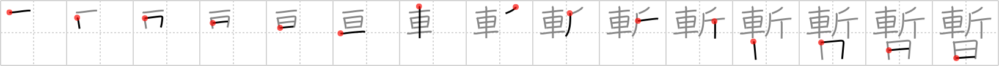

暫
← →
temporarily

Reading:
On-Yomi: ザン — Kun-Yomi: しばら.く
Heisig story:
Chop off . . . days.
Koohii stories:
1) [gorgon] 30-1-2006(219): Your car has been savagely (see steadily) attacked by an ax. It will be some days before your car is fixed. So you are temporarily without car.
2) [jotun] 24-5-2008(107): Today is Car Axe Day. The day where you can temporarily (today only) attack cars using an axe without punishment.
3) [cjon256] 1-5-2009(27): The top kanji is chop off (#2092 斬).
4) [tenken3] 17-5-2007(21): Axe murderer hiding in a car temporarily for a few days after killing someone.
5) [DrJones] 18-1-2008(15): [chop off (#2092 斬) … day] During daylight saving time, we temporarily chop off the day by taking an hour out of it, which we will return back in six months.